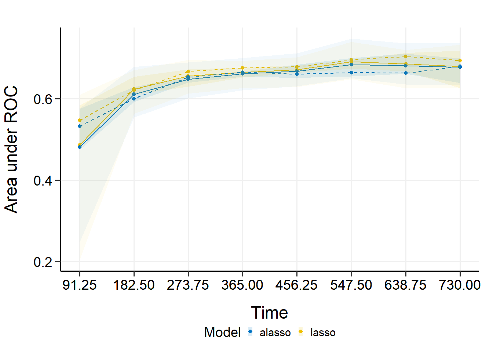

# 2选1
install.packages("hdnom")
remotes::install_github("nanxstats/hdnom")39 lasso回归列线图、校准曲线、内外部验证
lasso回归是预测模型类文章中的常用方法，但是大家使用lasso主要是为了筛选变量，并不是把它用作最终的模型。它的缺点之一就是没法像cox回归或者逻辑回归那样，可以绘制列线图。今天介绍的hdnom就可以完美解决这个问题。
hdnom是专门为正则化cox回归设计的R包，可以实现多种类型lasso回归的列线图绘制、内外部验证、校准曲线绘制、模型比较等。
该包的github地址是：https://github.com/nanxstats/hdnom/，它的作者和ggsci的作者是同一个人。
hdnom支持常规lasso、自适应lasso、弹性网络、自适应弹性网络、MCP、SCAD等多种方法，每种方法由不同的函数完成，并包括不同的超参数，见下图：

关于几种lasso方法的简单介绍可参考知乎文章：几个降维方法—Adaptive Lasso、Dantzig Selector、SCAD的简单介绍，或者自己搜索学习一下。
39.1 安装
39.2 加载R包和数据
使用smart数据集进行演示，这是一个生存数据。该数据是经过缺失值插补的，所以没有缺失值。包含3873行，27个预测变量，TEVENT是时间变量，EVENT是结局变量。
library(hdnom)
data("smart")
x <- as.matrix(smart[, -c(1, 2)])
time <- smart$TEVENT
event <- smart$EVENT
y <- survival::Surv(time, event)39.3 拟合模型
拟合一个最简单的正则化COX回归，它会自动执行超参数调优的过程：
#suppressMessages(library("doParallel"))
#registerDoParallel(detectCores())
fit <- fit_lasso(x, y, nfolds = 10, rule = "lambda.1se", seed = 1001)
fit
## High-Dimensional Cox Model Object
## Random seed: 1001
## Model type: lasso
## Best lambda: 0.02351754
names(fit)
## [1] "model" "lambda" "type" "seed" "call"我们选择的最佳超参数的方法是"lambda.1se"，此时选中的最佳lambda是0.02351754。
39.4 列线图
首先要提取模型对象和超参数，不同的正则化模型有不同的超参数，不要搞错了：
model <- fit$model
#alpha <- fit$alpha
lambda <- fit$lambda
#adapen <- fit$pen_factor使用as_nomogram转换一下，就可以绘制列线图了：
nom <- as_nomogram(
fit, x, time, event,
pred.at = 365 * 2,
funlabel = "2-Year Overall Survival Probability"
)
plot(nom)
39.5 模型验证
39.5.1 内部验证
通过validate函数可以实现内部验证，和rms包如出一辙！支持bootstrap、交叉验证、重复交叉验证3种重抽样方法。
注意这个函数对不同的正则化方法有不同的要求，注意看帮助文档，下面是10次bootstrap的内部验证，时间截点选择的是第一年到第5年，每半年一次（也就是第1，1.5，2，2.5，3，3.5，4，4.5，5年这几个截点）。
val_int <- validate(
x, time, event,
model.type = "lasso",
alpha = 1, # lasso的alpha是1
lambda = lambda,
method = "bootstrap", boot.times = 10,
tauc.type = "UNO", tauc.time = seq(1, 5, 0.5) * 365,
seed = 42, trace = FALSE
)
# 最后一行给出了不同时间截点的time-dependent AUC
print(val_int)
## High-Dimensional Cox Model Validation Object
## Random seed: 42
## Validation method: bootstrap
## Bootstrap samples: 10
## Model type: lasso
## glmnet model alpha: 1
## glmnet model lambda: 0.02351754
## glmnet model penalty factor: not specified
## Time-dependent AUC type: UNO
## Evaluation time points for tAUC: 365 547.5 730 912.5 1095 1277.5 1460 1642.5 1825
# 给出time-dependent AUC的均值、最大值、最小值等信息
summary(val_int)
## Time-Dependent AUC Summary at Evaluation Time Points
## 365 547.5 730 912.5 1095 1277.5 1460
## Mean 0.6621581 0.6954059 0.6790755 0.6735408 0.7087387 0.7318520 0.6849760
## Min 0.6520262 0.6885520 0.6695303 0.6673154 0.6925704 0.7075978 0.6730413
## 0.25 Qt. 0.6613887 0.6924443 0.6774962 0.6704223 0.7077576 0.7275127 0.6802230
## Median 0.6624251 0.6959672 0.6793223 0.6742531 0.7099186 0.7333807 0.6862219
## 0.75 Qt. 0.6639822 0.6986393 0.6818983 0.6757052 0.7126817 0.7381664 0.6904942
## Max 0.6682398 0.6998708 0.6895636 0.6792039 0.7194969 0.7481341 0.6951763
## 1642.5 1825
## Mean 0.6809777 0.6993722
## Min 0.6698759 0.6892602
## 0.25 Qt. 0.6779836 0.6961173
## Median 0.6810805 0.7018242
## 0.75 Qt. 0.6852553 0.7026699
## Max 0.6908602 0.7058832其中的均值和中位数可以当做矫正过误差的模型表现。
把time-dependent AUC画出来：
plot(val_int)
## 365 547.5 730 912.5 1095 1277.5 1460
## Mean 0.6621581 0.6954059 0.6790755 0.6735408 0.7087387 0.7318520 0.6849760
## Min 0.6520262 0.6885520 0.6695303 0.6673154 0.6925704 0.7075978 0.6730413
## 0.25 Qt. 0.6613887 0.6924443 0.6774962 0.6704223 0.7077576 0.7275127 0.6802230
## Median 0.6624251 0.6959672 0.6793223 0.6742531 0.7099186 0.7333807 0.6862219
## 0.75 Qt. 0.6639822 0.6986393 0.6818983 0.6757052 0.7126817 0.7381664 0.6904942
## Max 0.6682398 0.6998708 0.6895636 0.6792039 0.7194969 0.7481341 0.6951763
## 1642.5 1825
## Mean 0.6809777 0.6993722
## Min 0.6698759 0.6892602
## 0.25 Qt. 0.6779836 0.6961173
## Median 0.6810805 0.7018242
## 0.75 Qt. 0.6852553 0.7026699
## Max 0.6908602 0.7058832
上图中实线表示AUC的平均值，虚线表示AUC的中位数。图中较暗的区间显示AUC的25%和75%分位数，较浅的区间显示AUC的最小值和最大值。
39.5.2 外部验证
也就是用一个新的数据集进行验证，这里我们从smart中随机抽取1000个样本作为外部验证集。
外部验证使用validate_external，使用方法和validate一模一样，但是没有重抽样了，因为外部验证就是检查模型的，就是要最真实的结果，不需要重抽样：
x_new <- as.matrix(smart[, -c(1, 2)])[1001:2000, ]
time_new <- smart$TEVENT[1001:2000]
event_new <- smart$EVENT[1001:2000]
val_ext <- validate_external(
fit, x, time, event,
x_new, time_new, event_new,
tauc.type = "UNO",
tauc.time = seq(0.25, 2, 0.25) * 365 # 时间截点和内部验证不同了
)
# 3个查看结果的方法，也是内部验证一样的
print(val_ext)
## High-Dimensional Cox Model External Validation Object
## Model type: lasso
## Time-dependent AUC type: UNO
## Evaluation time points for tAUC: 91.25 182.5 273.75 365 456.25 547.5 638.75 730
summary(val_ext)
## Time-Dependent AUC Summary at Evaluation Time Points
## 91.25 182.5 273.75 365 456.25 547.5 638.75
## AUC 0.4794879 0.6008266 0.662017 0.6523222 0.6732534 0.6963037 0.7013534
## 730
## AUC 0.7042923
plot(val_ext)
## 91.25 182.5 273.75 365 456.25 547.5 638.75
## AUC 0.4794879 0.6008266 0.662017 0.6523222 0.6732534 0.6963037 0.7013534
## 730
## AUC 0.7042923
39.6 模型校准
也就是绘制校准曲线，同样是支持内部校准和外部校准。
39.6.1 内部校准曲线
内部校准通过calibrate实现，也是支持bootstrap、交叉验证、重复交叉验证3种重抽样方法，和rms包类似的。
下面是10次bootstrap的内部校准，时间截点选择的是第5年：
cal_int <- calibrate(
x, time, event,
model.type = "aenet",
alpha = 1,
lambda = lambda,
#pen.factor = adapen,
method = "bootstrap", boot.times = 10,
pred.at = 365 * 5, ngroup = 3, # 分几组
seed = 42, trace = FALSE
)
# 查看结果
print(cal_int)
## High-Dimensional Cox Model Calibration Object
## Random seed: 42
## Calibration method: bootstrap
## Bootstrap samples: 10
## Model type: aenet
## glmnet model alpha: 1
## glmnet model lambda: 0.02351754
## glmnet model penalty factor: not specified
## Calibration time point: 1825
## Number of groups formed for calibration: 3
# 真实值、预测值、可信区间
summary(cal_int)
## Calibration Summary Table
## Predicted Observed Lower 95% Upper 95%
## 1 0.8214255 0.7508803 0.7216191 0.7813280
## 2 0.8696257 0.9021791 0.8812135 0.9236435
## 3 0.8978577 0.9307660 0.9136491 0.9482034这个结果的预测值是预测概率的中位数（因为使用了bootstrap，所以会有多个预测值，所以可以计算中位数），真实值是K-M法计算的，这些我们在之前的推文中都详细介绍过的，后台回复校准曲线即可获取相关推文合集了。
绘制校准曲线：
plot(cal_int, xlim = c(0.7, 1), ylim = c(0.7, 1))
可以多个时间点的画在一起。
39.6.2 外部校准
通过calibrate_external实现：
cal_ext <- calibrate_external(
fit, x, time, event,
x_new, time_new, event_new,
pred.at = 365 * 5, ngroup = 3
)
print(cal_ext)
## High-Dimensional Cox Model External Calibration Object
## Model type: lasso
## Calibration time point: 1825
## Number of groups formed for calibration: 3
summary(cal_ext)
## External Calibration Summary Table
## Predicted Observed Lower 95% Upper 95%
## 1 0.8132618 0.7376980 0.6892529 0.7895482
## 2 0.8721412 0.8829179 0.8478426 0.9194443
## 3 0.9021290 0.9381784 0.9113542 0.9657922
plot(cal_ext, xlim = c(0.5, 1), ylim = c(0.5, 1))
39.7 risk group的K-M生存曲线
在进行模型校准时我们是分成了3组，所以这里可以对这3组进行K-M生存分析，log-tank检验的P值也会展示出来。
内部验证的3个组别：
kmplot(
cal_int,
group.name = c("High risk", "Medium risk", "Low risk"),
time.at = 1:6 * 365
)外部验证的3个组别：
kmplot(
cal_ext,
group.name = c("High risk", "Medium risk", "Low risk"),
time.at = 1:6 * 365
)39.8 risk group的log-rank检验
也可以直接进行log-rank检验：
# 内部验证3个组的log-rank检验
cal_int_logrank <- logrank_test(cal_int)
cal_int_logrank
## Call:
## survdiff(formula = formula("Surv(time, event) ~ grp"))
##
## n=3872, 1 observation deleted due to missingness.
##
## N Observed Expected (O-E)^2/E (O-E)^2/V
## grp=1 1290 279 148 116.1 171.5
## grp=2 1291 104 155 16.6 25.0
## grp=3 1291 76 156 41.4 62.8
##
## Chisq= 174 on 2 degrees of freedom, p= <2e-16
cal_int_logrank$pval
## [1] 1.511019e-38
# 外部验证3个组的log-rank检验
cal_ext_logrank <- logrank_test(cal_ext)
cal_ext_logrank
## Call:
## survdiff(formula = formula("Surv(time, event) ~ grp"))
##
## n=999, 1 observation deleted due to missingness.
##
## N Observed Expected (O-E)^2/E (O-E)^2/V
## grp=1 333 86 44.8 37.95 54.76
## grp=2 333 38 50.1 2.94 4.47
## grp=3 333 23 52.1 16.23 25.17
##
## Chisq= 57.3 on 2 degrees of freedom, p= 4e-13
cal_ext_logrank$pval
## [1] 3.581463e-1339.9 模型比较
39.9.1 通过模型验证比较
通过validate进行比较，也就是通过计算不同模型的time-dependent AUC进行比较。
比如这里比较一下lasso和自适应lasso的模型效果：
cmp_val <- compare_by_validate(
x, time, event,
model.type = c("lasso", "alasso"),
method = "cv", nfolds = 5, tauc.type = "UNO",
tauc.time = seq(0.25, 2, 0.25) * 365,
seed = 42, trace = FALSE
)
#print(cmp_val)
#summary(cmp_val)
plot(cmp_val) #袋外数据的结果
## 91.25 182.5 273.75 365 456.25 547.5 638.75
## Mean 0.4862766 0.6235047 0.6554862 0.6645661 0.6709065 0.6905955 0.6859931
## Min 0.2039134 0.5628978 0.6125746 0.6259622 0.6288554 0.6480062 0.6258751
## 0.25 Qt. 0.4868413 0.6095040 0.6296803 0.6518906 0.6636125 0.6740643 0.6677914
## Median 0.5470612 0.6207525 0.6669674 0.6753767 0.6780298 0.6956816 0.7034205
## 0.75 Qt. 0.5840546 0.6536918 0.6724515 0.6765498 0.6818180 0.6959422 0.7126816
## Max 0.6095124 0.6706775 0.6957573 0.6930510 0.7022166 0.7392832 0.7201967
## 730
## Mean 0.6789647
## Min 0.6251706
## 0.25 Qt. 0.6258098
## Median 0.6935016
## 0.75 Qt. 0.7180132
## Max 0.7323283
## 91.25 182.5 273.75 365 456.25 547.5 638.75
## Mean 0.4814586 0.6106500 0.6475280 0.6612647 0.6675871 0.6834418 0.6813224
## Min 0.2479919 0.5538453 0.6009056 0.6208453 0.6310650 0.6504086 0.6354844
## 0.25 Qt. 0.4747967 0.5918396 0.6394882 0.6539436 0.6509640 0.6548892 0.6608927
## Median 0.5320552 0.6000809 0.6534756 0.6651832 0.6601551 0.6643520 0.6634682
## 0.75 Qt. 0.5755143 0.6290886 0.6546811 0.6665424 0.6841356 0.6999959 0.7108894
## Max 0.5769350 0.6783959 0.6890896 0.6998091 0.7116160 0.7475634 0.7358773
## 730
## Mean 0.6774869
## Min 0.6340813
## 0.25 Qt. 0.6386258
## Median 0.6791506
## 0.75 Qt. 0.6995719
## Max 0.7360047内部验证的结果：
plot(cmp_val, interval = TRUE)
## 91.25 182.5 273.75 365 456.25 547.5 638.75
## Mean 0.4862766 0.6235047 0.6554862 0.6645661 0.6709065 0.6905955 0.6859931
## Min 0.2039134 0.5628978 0.6125746 0.6259622 0.6288554 0.6480062 0.6258751
## 0.25 Qt. 0.4868413 0.6095040 0.6296803 0.6518906 0.6636125 0.6740643 0.6677914
## Median 0.5470612 0.6207525 0.6669674 0.6753767 0.6780298 0.6956816 0.7034205
## 0.75 Qt. 0.5840546 0.6536918 0.6724515 0.6765498 0.6818180 0.6959422 0.7126816
## Max 0.6095124 0.6706775 0.6957573 0.6930510 0.7022166 0.7392832 0.7201967
## 730
## Mean 0.6789647
## Min 0.6251706
## 0.25 Qt. 0.6258098
## Median 0.6935016
## 0.75 Qt. 0.7180132
## Max 0.7323283
## 91.25 182.5 273.75 365 456.25 547.5 638.75
## Mean 0.4814586 0.6106500 0.6475280 0.6612647 0.6675871 0.6834418 0.6813224
## Min 0.2479919 0.5538453 0.6009056 0.6208453 0.6310650 0.6504086 0.6354844
## 0.25 Qt. 0.4747967 0.5918396 0.6394882 0.6539436 0.6509640 0.6548892 0.6608927
## Median 0.5320552 0.6000809 0.6534756 0.6651832 0.6601551 0.6643520 0.6634682
## 0.75 Qt. 0.5755143 0.6290886 0.6546811 0.6665424 0.6841356 0.6999959 0.7108894
## Max 0.5769350 0.6783959 0.6890896 0.6998091 0.7116160 0.7475634 0.7358773
## 730
## Mean 0.6774869
## Min 0.6340813
## 0.25 Qt. 0.6386258
## Median 0.6791506
## 0.75 Qt. 0.6995719
## Max 0.7360047
39.9.2 通过模型校准验证
也就是通过校准曲线进行验证。
cmp_cal <- compare_by_calibrate(
x, time, event,
model.type = c("lasso", "alasso"),
method = "cv", nfolds = 5,
pred.at = 365 * 9, ngroup = 5,
seed = 42, trace = FALSE
)
#print(cmp_cal)
#summary(cmp_cal)
plot(cmp_cal, xlim = c(0.3, 1), ylim = c(0.3, 1))39.10 预测新数据
由于在拟合模型时会自动进行超参数选择，所以得到的模型就是最终结果了。可以直接使用predict预测新数据。
predict(fit, x, y, newx = x[101:105, ], pred.at = 1:10 * 365)
## 365 730 1095 1460 1825 2190 2555
## [1,] 0.9478345 0.9203830 0.8881359 0.8567453 0.8166540 0.7841083 0.7431914
## [2,] 0.9605957 0.9396430 0.9148295 0.8904582 0.8590046 0.8331866 0.8003446
## [3,] 0.9721710 0.9572351 0.9394182 0.9217779 0.8987971 0.8797459 0.8552554
## [4,] 0.9330930 0.8983106 0.8578385 0.8188522 0.7696659 0.7302518 0.6813769
## [5,] 0.9664734 0.9485614 0.9272704 0.9062732 0.8790447 0.8565816 0.8278538
## 2920 3285 3650
## [1,] 0.7039669 0.6496905 0.6496905
## [2,] 0.7684344 0.7235347 0.7235347
## [3,] 0.8311712 0.7967714 0.7967714
## [4,] 0.6352566 0.5726751 0.5726751
## [5,] 0.7997693 0.7599497 0.7599497是不是很简单呢？
39.11 shiny版
该包还提供了shiny版本，可以通过点点点使用，感兴趣的可以试用一下：nanx.app/hdnom/